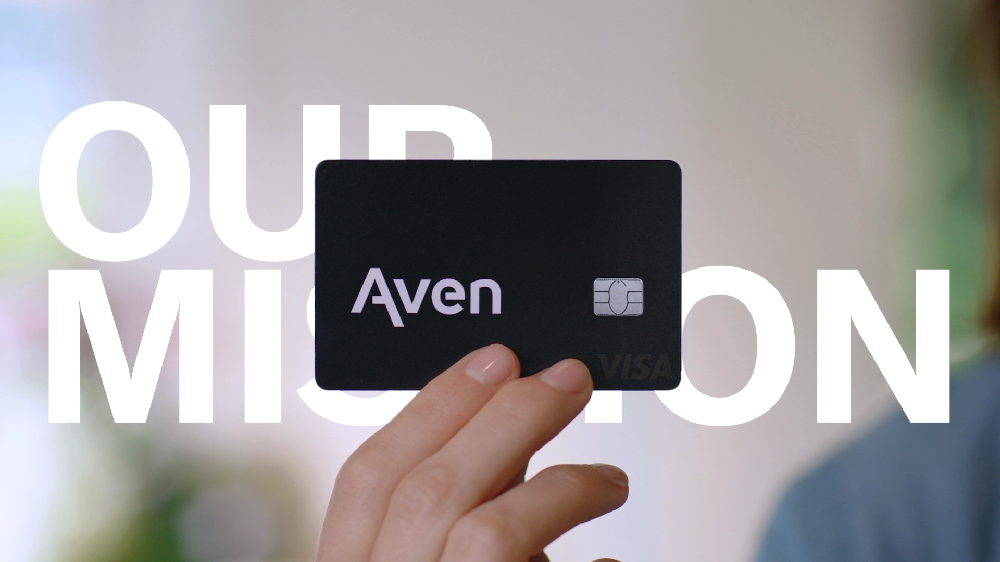
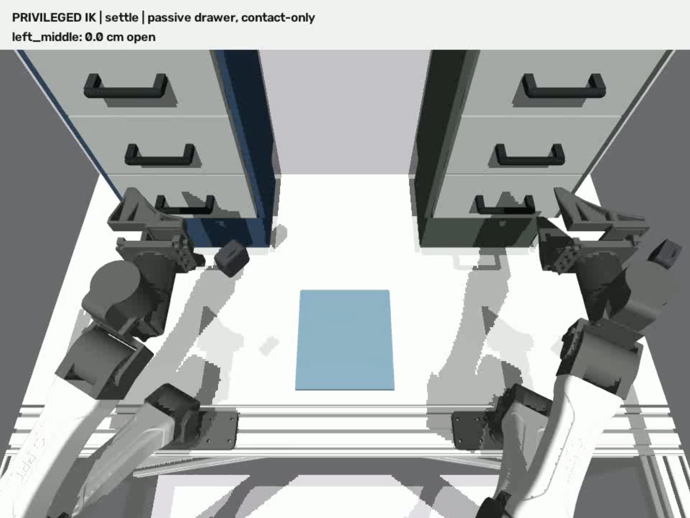
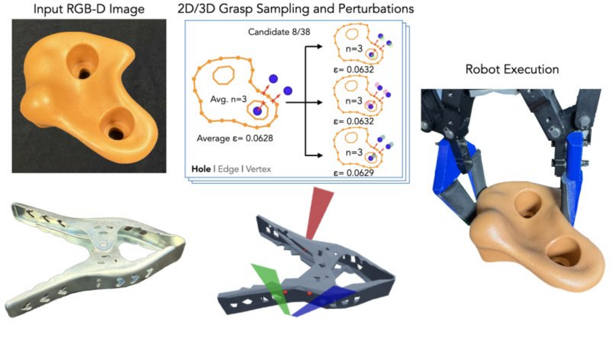
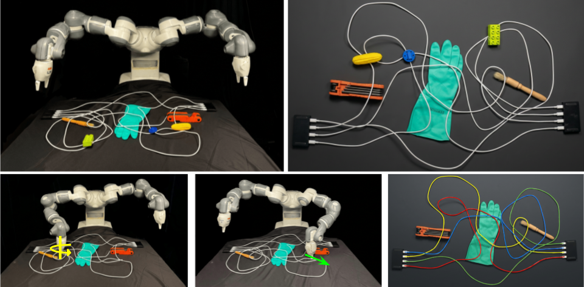
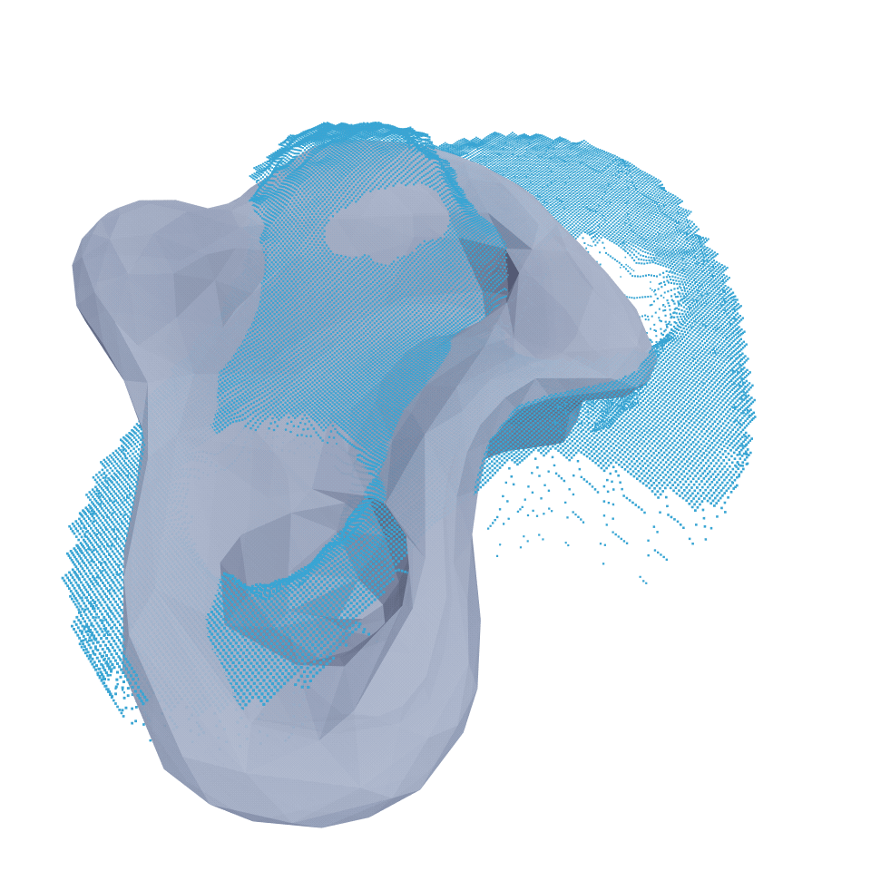
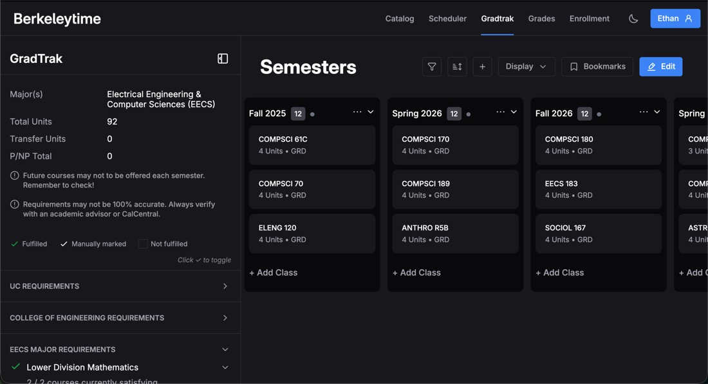
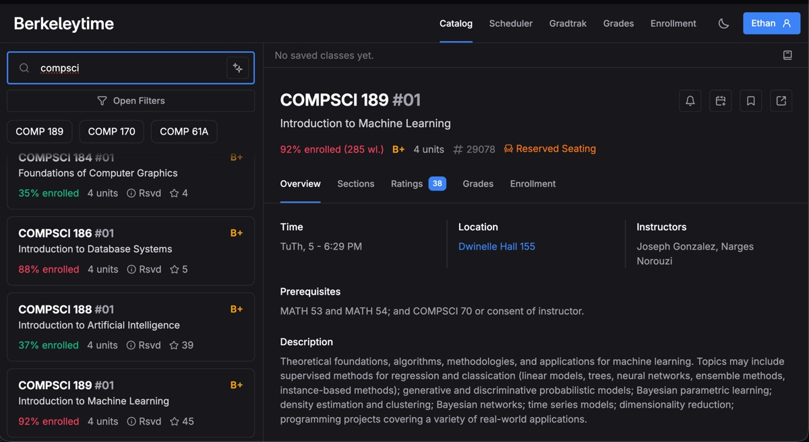
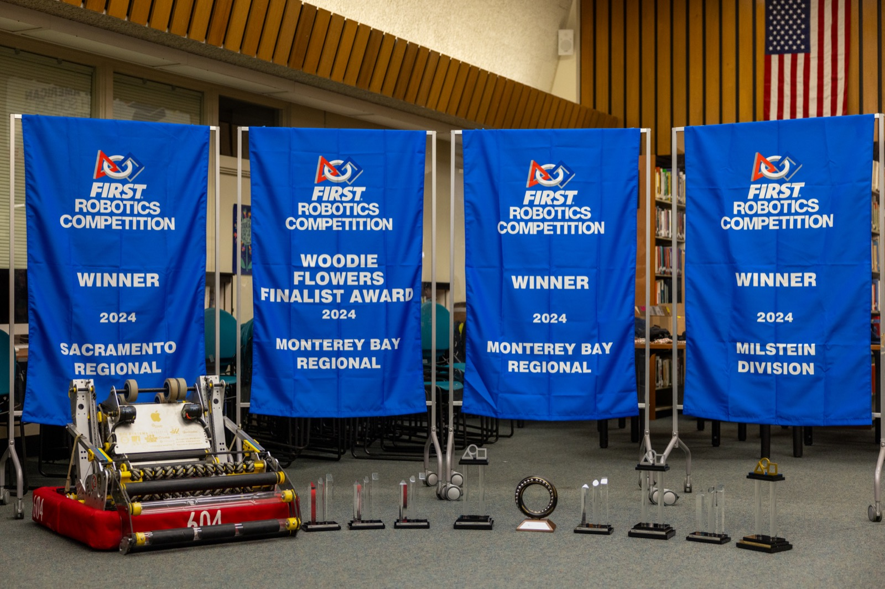

Ethan Ransing
I'm Ethan, a third-year undergraduate studying Electrical Engineering and Computer Sciences at UC Berkeley. I'm excited about robotics, financial infrastructure, and agentic systems.
At the AUTOLab (part of the Berkeley Artificial Intelligence Research cluster), advised by Prof. Ken Goldberg, I currently work on dexterous manipulation and sim environments for robot learning. Previously, I've worked on reward models for robot data curation (CoRL 2026), grasp planning for asymmetrical grippers (CASE 2026), and cable tracing with targeted robot manipulation primitives, which I presented at IROS 2026!
Experience







Research
Real2Sim2Real for Non-Prehensile Manipulation
One stereo object capture + one human demo → PPO in a MuJoCo Warp environment → VLA post-training with rendered actor rollouts → non-prehensile manipulation in real. Click here for more details!